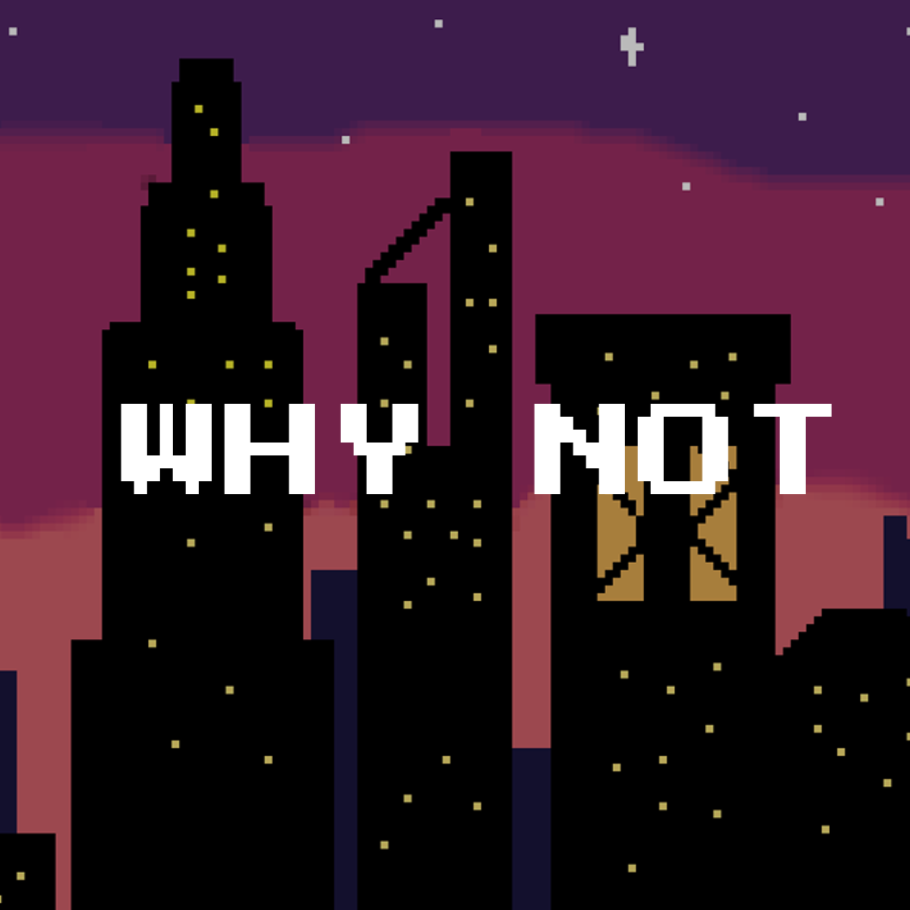
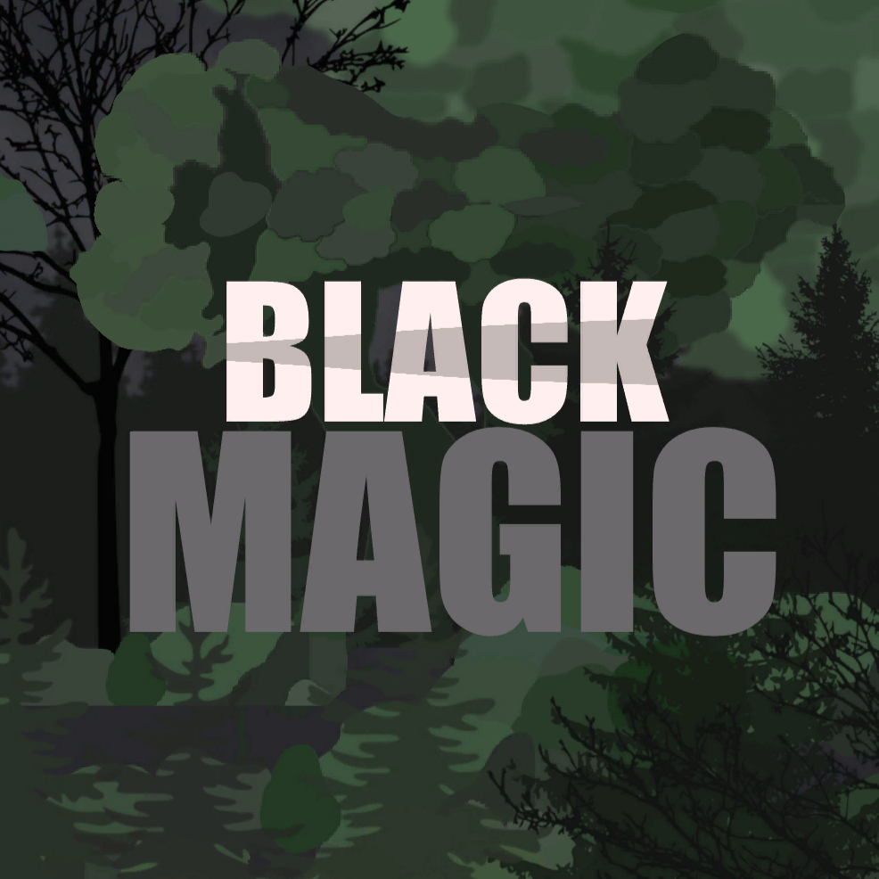

Hermes
Unreal Engine ile Geliştirilmiş Aksiyon & Macera Oyunu

Oyun Hakkında
Hermes, mitolojik bir evrende geçen, hız ve refleks odaklı bir platform oyunudur. Oyuncu, Tanrıların habercisi Hermes rolünü üstlenerek, Olimpos'a ulaşması gereken acil bir mesajı, yeraltı dünyasının tuzaklarına takılmadan iletmelidir.
Neler Yaptım? (My Contribution)
Bu projede Lead Game Designer ve Gameplay Programmer olarak çalıştım. Başlıca katkılarım:
- Mekanik Tasarımı: Karakterin "Dash" ve "Wall Run" mekaniklerini Unreal Blueprint sistemi ile sıfırdan kurguladım.
- Level Design: Oyunun ilk 3 bölümünün graybox aşamasından final ışıklandırmasına kadar tasarımını yaptım.
- AI (Yapay Zeka): Düşmanların devriye gezme (Patrol) sistemini Behavior Tree kullanarak kodladım.
- UI/UX: Can barı ve yetenek bekleme sürelerini gösteren arayüzü entegre ettim.
Proje Bilgileri
- Tür: Action, Platformer
- Motor: Unreal Engine 5.1
- Dil: Blueprint & C++
- Süre: 3 Ay (Game Jam)
- Takım: 2 Yazılımcı, 1 Artist
- Platform: PC (Windows)
Oyun İçi Görseller

